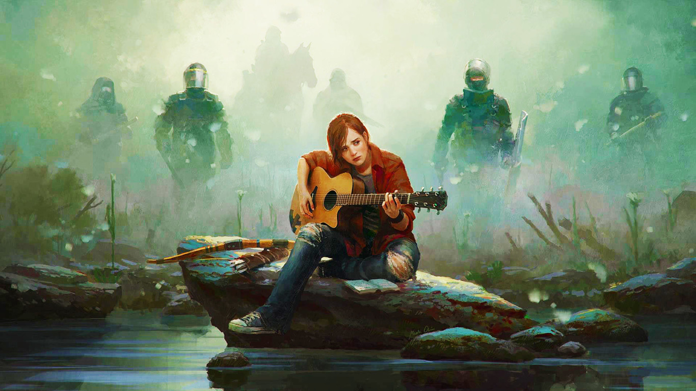

Es oficial: The Last of Us tendrá
segunda parte y este es su tráiler [PSX 2016]

La PlayStation Experience se dejó lo mejor para el final,
¡y menudo final! tal y como adelantamos, el broche de la saga
'Uncharted' dejaba la agenda de Naughty Dog suficientemente
despejada como para ofrecer la continuación de uno de los
juegos más aclamados de la compañía californiana: 'The Last of Us'
Con el subtítulo de 'Parte II', en esta ocasión veremos
una Ellie más Tarantiniana en busca de venganza.
Eso sí, la ambientación vuelve a ser el tercer protagonista
de la licencia: una visión marchita de la civilización
tras un post-apocalipsis que le sienta de
maravilla al catálogo de las sobremesas de Sony.
De momento no hay fechas de lanzamiento ni
detalles más allá de su propia ambientación.
Eso sí, se nota que a los creadores de Crash Bandicoot
tienen dominado el apartado visual y narrativo,
porque no ha necesitado introducir un ápice de acrción
para transportarnos a la crudeza de ese universo.

Con 'The Last of Us Part II' la PlayStation 4
refuerza de manera drástica un
catálogo a medio-largo plazo sumando 'God of War',
'Horizon: Zero Dawn' o 'Spiderman' a su propuesta.
En un tiempo donde los retrasos y los
plazos colisionan, lo único que tenemos claro
es que Naughty Dog puede tardar lo que estime si con
ello consigue elevar el ya de por sí enorme
listón de la primera entrega.